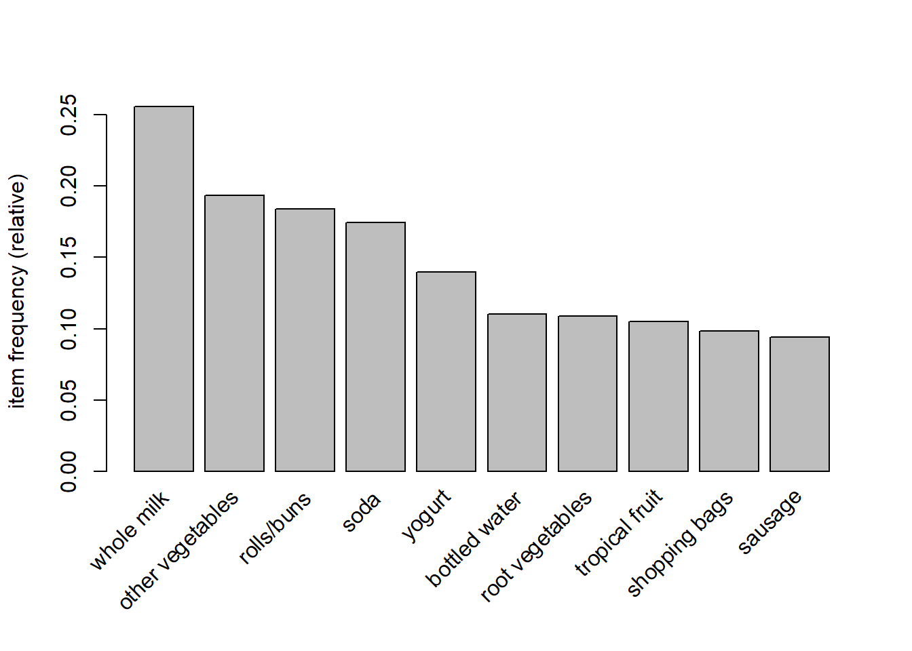
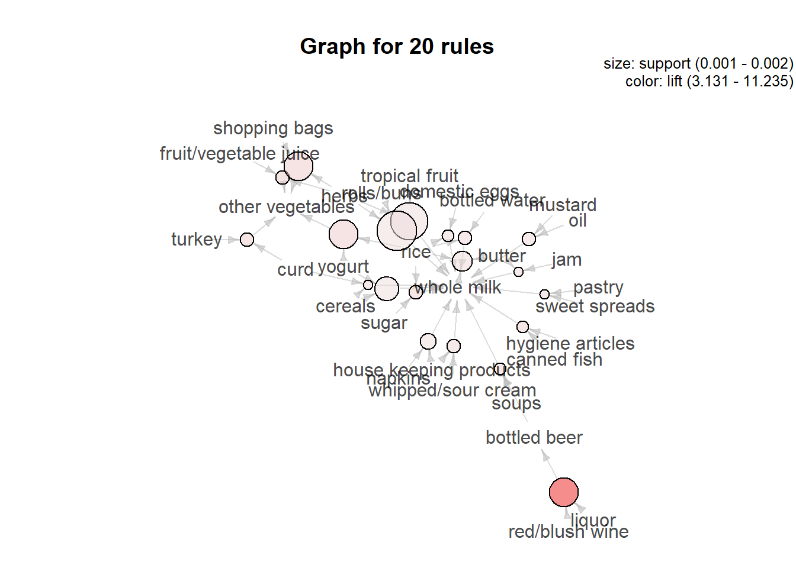

Association rule learning is a rule-based machine learning method for discovering interesting relations between variables in large databases. It is intended to identify strong rules discovered in databases using some measures of interestingness.
We will use an inbuilt dataset “Groceries” from the ‘arules’ package to illyustrate our analysis.
library(arules)
data("Groceries")
summary(Groceries)## transactions as itemMatrix in sparse format with
## 9835 rows (elements/itemsets/transactions) and
## 169 columns (items) and a density of 0.02609146
##
## most frequent items:
## whole milk other vegetables rolls/buns soda
## 2513 1903 1809 1715
## yogurt (Other)
## 1372 34055
##
## element (itemset/transaction) length distribution:
## sizes
## 1 2 3 4 5 6 7 8 9 10 11 12 13 14 15 16
## 2159 1643 1299 1005 855 645 545 438 350 246 182 117 78 77 55 46
## 17 18 19 20 21 22 23 24 26 27 28 29 32
## 29 14 14 9 11 4 6 1 1 1 1 3 1
##
## Min. 1st Qu. Median Mean 3rd Qu. Max.
## 1.000 2.000 3.000 4.409 6.000 32.000
##
## includes extended item information - examples:
## labels level2 level1
## 1 frankfurter sausage meat and sausage
## 2 sausage sausage meat and sausage
## 3 liver loaf sausage meat and sausageWe can also quickly visualize what are the top 10 purchased items of this list.
itemFrequencyPlot(Groceries, topN = 10) # Apriori
rules = apriori(data = Groceries, parameter = list(support = 0.001, confidence = 0.80))## Apriori
##
## Parameter specification:
## confidence minval smax arem aval originalSupport maxtime support minlen
## 0.8 0.1 1 none FALSE TRUE 5 0.001 1
## maxlen target ext
## 10 rules TRUE
##
## Algorithmic control:
## filter tree heap memopt load sort verbose
## 0.1 TRUE TRUE FALSE TRUE 2 TRUE
##
## Absolute minimum support count: 9
##
## set item appearances ...[0 item(s)] done [0.00s].
## set transactions ...[169 item(s), 9835 transaction(s)] done [0.00s].
## sorting and recoding items ... [157 item(s)] done [0.00s].
## creating transaction tree ... done [0.00s].
## checking subsets of size 1 2 3 4 5 6 done [0.01s].
## writing ... [410 rule(s)] done [0.00s].
## creating S4 object ... done [0.00s].inspect(sort(rules, by = 'lift')[1:10])## lhs rhs support confidence coverage lift count
## [1] {liquor,
## red/blush wine} => {bottled beer} 0.001931876 0.9047619 0.002135231 11.235269 19
## [2] {citrus fruit,
## other vegetables,
## soda,
## fruit/vegetable juice} => {root vegetables} 0.001016777 0.9090909 0.001118454 8.340400 10
## [3] {tropical fruit,
## other vegetables,
## whole milk,
## yogurt,
## oil} => {root vegetables} 0.001016777 0.9090909 0.001118454 8.340400 10
## [4] {citrus fruit,
## grapes,
## fruit/vegetable juice} => {tropical fruit} 0.001118454 0.8461538 0.001321810 8.063879 11
## [5] {other vegetables,
## whole milk,
## yogurt,
## rice} => {root vegetables} 0.001321810 0.8666667 0.001525165 7.951182 13
## [6] {tropical fruit,
## other vegetables,
## whole milk,
## oil} => {root vegetables} 0.001321810 0.8666667 0.001525165 7.951182 13
## [7] {ham,
## pip fruit,
## other vegetables,
## yogurt} => {tropical fruit} 0.001016777 0.8333333 0.001220132 7.941699 10
## [8] {beef,
## citrus fruit,
## tropical fruit,
## other vegetables} => {root vegetables} 0.001016777 0.8333333 0.001220132 7.645367 10
## [9] {root vegetables,
## butter,
## cream cheese } => {yogurt} 0.001016777 0.9090909 0.001118454 6.516698 10
## [10] {tropical fruit,
## whole milk,
## butter,
## sliced cheese} => {yogurt} 0.001016777 0.9090909 0.001118454 6.516698 10The first rule shows that if we buy Liquor and Red Wine, we are very likely to buy bottled beer. We can rank the rules based on top 10 from either lift, support or confidence.
We can use a graph to highlight the support and lifts of various items in our repository but mostly to see which product is associated with which one in the sales environment.
library(arulesViz)
plot(rules[1:20],
method = "graph",
control = list(type = "items"))## Available control parameters (with default values):
## main = Graph for 20 rules
## nodeColors = c("#66CC6680", "#9999CC80")
## nodeCol = c("#EE0000FF", "#EE0303FF", "#EE0606FF", "#EE0909FF", "#EE0C0CFF", "#EE0F0FFF", "#EE1212FF", "#EE1515FF", "#EE1818FF", "#EE1B1BFF", "#EE1E1EFF", "#EE2222FF", "#EE2525FF", "#EE2828FF", "#EE2B2BFF", "#EE2E2EFF", "#EE3131FF", "#EE3434FF", "#EE3737FF", "#EE3A3AFF", "#EE3D3DFF", "#EE4040FF", "#EE4444FF", "#EE4747FF", "#EE4A4AFF", "#EE4D4DFF", "#EE5050FF", "#EE5353FF", "#EE5656FF", "#EE5959FF", "#EE5C5CFF", "#EE5F5FFF", "#EE6262FF", "#EE6666FF", "#EE6969FF", "#EE6C6CFF", "#EE6F6FFF", "#EE7272FF", "#EE7575FF", "#EE7878FF", "#EE7B7BFF", "#EE7E7EFF", "#EE8181FF", "#EE8484FF", "#EE8888FF", "#EE8B8BFF", "#EE8E8EFF", "#EE9191FF", "#EE9494FF", "#EE9797FF", "#EE9999FF", "#EE9B9BFF", "#EE9D9DFF", "#EE9F9FFF", "#EEA0A0FF", "#EEA2A2FF", "#EEA4A4FF", "#EEA5A5FF", "#EEA7A7FF", "#EEA9A9FF", "#EEABABFF", "#EEACACFF", "#EEAEAEFF", "#EEB0B0FF", "#EEB1B1FF", "#EEB3B3FF", "#EEB5B5FF", "#EEB7B7FF", "#EEB8B8FF", "#EEBABAFF", "#EEBCBCFF", "#EEBDBDFF", "#EEBFBFFF", "#EEC1C1FF", "#EEC3C3FF", "#EEC4C4FF", "#EEC6C6FF", "#EEC8C8FF", "#EEC9C9FF", "#EECBCBFF", "#EECDCDFF", "#EECFCFFF", "#EED0D0FF", "#EED2D2FF", "#EED4D4FF", "#EED5D5FF", "#EED7D7FF", "#EED9D9FF", "#EEDBDBFF", "#EEDCDCFF", "#EEDEDEFF", "#EEE0E0FF", "#EEE1E1FF", "#EEE3E3FF", "#EEE5E5FF", "#EEE7E7FF", "#EEE8E8FF", "#EEEAEAFF", "#EEECECFF", "#EEEEEEFF")
## edgeCol = c("#474747FF", "#494949FF", "#4B4B4BFF", "#4D4D4DFF", "#4F4F4FFF", "#515151FF", "#535353FF", "#555555FF", "#575757FF", "#595959FF", "#5B5B5BFF", "#5E5E5EFF", "#606060FF", "#626262FF", "#646464FF", "#666666FF", "#686868FF", "#6A6A6AFF", "#6C6C6CFF", "#6E6E6EFF", "#707070FF", "#727272FF", "#747474FF", "#767676FF", "#787878FF", "#7A7A7AFF", "#7C7C7CFF", "#7E7E7EFF", "#808080FF", "#828282FF", "#848484FF", "#868686FF", "#888888FF", "#8A8A8AFF", "#8C8C8CFF", "#8D8D8DFF", "#8F8F8FFF", "#919191FF", "#939393FF", "#959595FF", "#979797FF", "#999999FF", "#9A9A9AFF", "#9C9C9CFF", "#9E9E9EFF", "#A0A0A0FF", "#A2A2A2FF", "#A3A3A3FF", "#A5A5A5FF", "#A7A7A7FF", "#A9A9A9FF", "#AAAAAAFF", "#ACACACFF", "#AEAEAEFF", "#AFAFAFFF", "#B1B1B1FF", "#B3B3B3FF", "#B4B4B4FF", "#B6B6B6FF", "#B7B7B7FF", "#B9B9B9FF", "#BBBBBBFF", "#BCBCBCFF", "#BEBEBEFF", "#BFBFBFFF", "#C1C1C1FF", "#C2C2C2FF", "#C3C3C4FF", "#C5C5C5FF", "#C6C6C6FF", "#C8C8C8FF", "#C9C9C9FF", "#CACACAFF", "#CCCCCCFF", "#CDCDCDFF", "#CECECEFF", "#CFCFCFFF", "#D1D1D1FF", "#D2D2D2FF", "#D3D3D3FF", "#D4D4D4FF", "#D5D5D5FF", "#D6D6D6FF", "#D7D7D7FF", "#D8D8D8FF", "#D9D9D9FF", "#DADADAFF", "#DBDBDBFF", "#DCDCDCFF", "#DDDDDDFF", "#DEDEDEFF", "#DEDEDEFF", "#DFDFDFFF", "#E0E0E0FF", "#E0E0E0FF", "#E1E1E1FF", "#E1E1E1FF", "#E2E2E2FF", "#E2E2E2FF", "#E2E2E2FF")
## alpha = 0.5
## cex = 1
## itemLabels = TRUE
## labelCol = #000000B3
## measureLabels = FALSE
## precision = 3
## layout = NULL
## layoutParams = list()
## arrowSize = 0.5
## engine = igraph
## plot = TRUE
## plot_options = list()
## max = 100
## verbose = FALSE # Eclat
rules = eclat(data = Groceries, parameter = list(support = 0.001, minlen = 2))## Eclat
##
## parameter specification:
## tidLists support minlen maxlen target ext
## FALSE 0.001 2 10 frequent itemsets TRUE
##
## algorithmic control:
## sparse sort verbose
## 7 -2 TRUE
##
## Absolute minimum support count: 9
##
## create itemset ...
## set transactions ...[169 item(s), 9835 transaction(s)] done [0.00s].
## sorting and recoding items ... [157 item(s)] done [0.00s].
## creating sparse bit matrix ... [157 row(s), 9835 column(s)] done [0.00s].
## writing ... [13335 set(s)] done [0.03s].
## Creating S4 object ... done [0.00s].inspect(sort(rules, by = 'support')[1:10])## items support transIdenticalToItemsets
## [1] {other vegetables,whole milk} 0.07483477 736
## [2] {whole milk,rolls/buns} 0.05663447 557
## [3] {whole milk,yogurt} 0.05602440 551
## [4] {root vegetables,whole milk} 0.04890696 481
## [5] {root vegetables,other vegetables} 0.04738180 466
## [6] {other vegetables,yogurt} 0.04341637 427
## [7] {other vegetables,rolls/buns} 0.04260295 419
## [8] {tropical fruit,whole milk} 0.04229792 416
## [9] {whole milk,soda} 0.04006101 394
## [10] {rolls/buns,soda} 0.03833249 377
## count
## [1] 736
## [2] 557
## [3] 551
## [4] 481
## [5] 466
## [6] 427
## [7] 419
## [8] 416
## [9] 394
## [10] 377The support of an itemset is how many times the itemset appears in the transaction database. For example, the itemset {other vegetables,whole milk} has a support of 736 because.